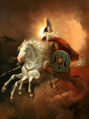

Одін або Вотан, Водан ("Всеотец", "воїн"), верховний бог скандинавсько-германської міфології, син Бора і Бестлі, онук Бурі. Його культ був особливо популярний у вікінгів, в зв'язку з чим період його розквіту припадає на VIII і IX століття. Мореплавці і пірати Півночі поклонялися 6oгy, люблячому битви, і вірили, що в Вальхаллі, що належить Одіну критому сріблом житло, цей одноокий бог збирає рать ейнхеріев, "відважно полеглих" воїнів.
Схоже, що саме тоді Один потіснив Тюра, спочатку бога неба германо-скандинавської міфології. Тюр залишився "богом битви", а Один взяв під своє заступництво військову еліту. Лише він міг під час битви приводити дружинників в стан несамовиту лють, коли вони позбавлялися почуття страху і відчуття болю. Ім'я Одіна означає шаманський екстаз, одержимість, близьку бойовому ражу ірландського героя Кухулина. Те, що саме Один зайняв місце верховного бога, показує, яку важливу роль в житті мешканців півночі грала війна.
Слід, однак, відзначити, що сам бог ні піддається войовничому екстазу; він був, швидше за все, сіячем військових чвар. Крім влади над дружинами смертних і "відважно полеглих", Один вважався богом магії і мудрості. Як найстаріший з богів, він був шанований ними як батько. Його можна звинуватити в підступність і кровожерливості, але не можна забувати, наприклад, про його освіченості.
Внутрішня боротьба добра і зла у Одіна кшталт природі індуїстського бога Шиви, великого руйнівника-творця індійської міфології. Одіна часто зображували однооким сивобородий старцем в синьому плащі, чиє обличчя приховано капюшоном або крислатим капелюхом. Око бог віддав Міміру, господареві джерела великої мудрості, за один лише ковток з нього. Що залишився очей символізував сонце, а втрачене око, символ місяця, плавало в джерелі Міміра. Щоб дізнатися таємницю мертвих і знайти дар ясновидіння, Один, пронизаний власним списом, дев'ять днів висів на світовому дереві Иггдрасиль. Потім, вгамувавши спрагу священним медом, він отримав від велетня Бёльторна, свого діда по материнській лінії, магічні руни - носії мудрості.
У Одіна була дружина Фригг, яка проживала в Асгарді. Вона по праву сиділа поруч з чоловіком на престолі глідск'яльв, звідки божественна пара могла оглядати всі дев'ять світів, спостерігаючи за подіями сьогодення і майбутнього. Один знав все, що відбувається в дев'яти світах, і в цьому йому допомагали дна брата-ворона, Хугін ("думка") і Мунін ("пам'ять"). Облетівши світи, птиці поверталися і, сидячи на плечах Одіна, нашіптували про все, що їм вдавалося дізнатися.
Одін стояв на чолі валькірій, виконавиць його волі на полях битв. Одного разу Брунхільда, допомагаючи Сігмунд, відмовилася коритися Одину. В покарання Брунхільда повинна була перебувати на вершині пагорба, поки її не полюбить смертний. Пізніше бог пом'якшив кару, оточивши Брунхільда вогненним кільцем, пройти яке міг лицар серед героїв. Синами Одіна вважалися серед інших Тор, Бальдр, Хед і Валі.
З наближенням Рагнарек мудрий і ясновидець Один ставав все більш стурбованим. Якщо в скандинавської міфології всесвіт очищається кров'ю інеїсті велетня Имира, оскільки божественні брати, Один, Вілі і Ве, убивши велетня, створюють з його тіла світ, то фіналом існування світу повинна стати битва богів і чудовиськ, і як підсумок - загальна загибель. Передвістям Рагнарек стала смерть Бальдра. Один був безсилий запобігти катастрофі. Єдиною втіхою йому служило знання, що відродився Бальдр займе його місце в новому світі, на новій землі, яка підніметься з морської безодні. Зростання чисельності зібраної в Вальхаллі дружини служив запорукою успішної підготовки до Рагнарек, оскільки ейнхеріев повинні були брати участь в цій останній битві в долині Вігрід. де загинуть і всі люди. Самого Одіна повинен проковтнути жахливий вовк Фенрир, мерзенний син бога вогню Локі і велетки Ангрбоди.